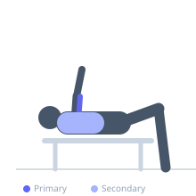
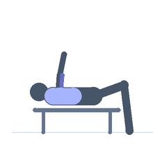

Exercise guide / Bench Tricep Dips
Bench Tricep Dips
Bench tricep dips are a bodyweight exercise where the hands are placed on a bench behind the body with the hips off the edge, and the body is lowered by bending the elbows. The triceps are the primary movers during elbow extension, while the anterior deltoid and pectoralis minor assist. Placing the feet flat on the floor makes this easier; elevating the feet increases difficulty.
Primary muscles
triceps lateral head
triceps medial head
Secondary muscles
deltoid anterior
pectoralis minor
Stabilizers
supraspinatus
Equipment
Flat Bench


Starting position
- Sit on the edge of a flat bench. Place hands beside the hips on the bench edge, fingers pointing forward. Slide the hips off the edge so the torso is suspended, feet flat on the floor.
Setup
- No additional equipment beyond a bench. For increased difficulty, place feet on another bench or box in front.
Steps
- Step 1: Sit on the bench edge, hands beside hips, fingers forward. Slide hips off the edge. Feet flat on the floor, knees bent.
- Step 2: Begin with arms extended, supporting body weight.
- Step 3: Inhale and lower the body by bending the elbows, keeping them pointing backward — not flaring to the sides.
- Step 4: Lower until elbows are approximately 90 degrees, then exhale and press back to full arm extension.
Coaching cues
- Elbows go back — not out to the sides
- Stay close to the bench — your hips should brush it on the way down
Breathing
- Inhale on the way down; exhale on the press up.
Range of motion
- Lower to 90-degree elbow bend; press to full arm extension.
Tempo
- 2-0-2-0
Common mistakes
- Letting the hips travel too far from the bench, which creates a shoulder impingement position
- Flaring the elbows wide rather than keeping them pointing behind
Safety
- Keep hips close to the bench — do not reach too far forward
- Stop if shoulder impingement or anterior shoulder pain is felt
Training
- strength: 5–10 reps
- hypertrophy: 10–20 reps
- endurance: 15–30 reps
- strength: 3–4 sets
- hypertrophy: 3–4 sets
- endurance: 2–3 sets
- Rest: {'strength': 90, 'hypertrophy': 60, 'endurance': 30}